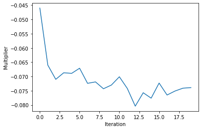

Lagrange Relaxation¶
Lagrange relaxation using annealing samplers [Ohzeki, 2020], called “Ohzeki method”.
import dimod
import numpy as np
import matplotlib.pyplot as plt
from tqdm import tqdm
Original formulation:
\[
E(\mathbf{x}) = \mathbf{x}^{\mathrm{T}} Q \mathbf{x} + \frac{1}{2} \sum_{\mu=1}^M \lambda_{\mu} \left(\sum_{i=1}^{N} F_{\mu i} x_{\mu i} - C_{\mu}\right)^{2}
\]
Lagrange relaxation:
\[
E(\mathbf{x}, \mathbf{\nu}) = \mathbf{x}^{\mathrm{T}} Q \mathbf{x} - \sum_{\mu=1}^M \nu_{\mu} \left(\sum_{i=1}^{N} F_{\mu i} x_{\mu i} - C_{\mu}\right)
\]
Algorithm:
Sampling \(\mathbf{x}\) (with \(\mathbf{\nu}\) fixed)
\[
E(\mathbf{x}, \mathbf{\nu}) = \mathbf{x}^{\mathrm{T}} Q \mathbf{x} - \sum_{\mu=1}^M \nu_{\mu} \sum_{i=1}^{N} F_{\mu i} x_{\mu i}
\]
Update lagrange multipliers \(\mathbf{\nu}\) (with \(\mathbf{x}\) fixed)
\[
\nu_{k}^{t+1}=\nu_{k}^{t}+\eta\left(C_{\mu}-\left\langle \sum_{i=1}^N F_{\mu i} x_{\mu i} \right\rangle\right)
\]
Repeat steps 1 and 2
class LagrangeRelax:
"""
Lagrange Relaxation using annealing samplers.
Attributes
----------
cost : numpy.ndarray
Cost function (QUBO matrix).
constraints: list
Equality constraints.
"""
def __init__(self, cost, constraints):
"""
Parameters
----------
cost : numpy.ndarray
Cost function (QUBO matrix).
constraints: list
Equality constraints.
"""
self.cost = cost
self.constraints = constraints
def _make_qubo_matrix(self, multipliers):
qubo = self.cost.copy()
for k, (Fk, Ck) in enumerate(self.constraints):
for i, Fki in Fk.items():
qubo[i, i] -= multipliers[k, i] * Fki
return qubo
def optimize(self, init_multipliers, eta, num_iters, sampler, **sample_params):
"""
Parameters
----------
init_multipliers : numpy.ndarray
Initial multipliers, which shape is (# of vars, # of constraints).
eta: float
Step width of the gradient method.
num_iters: int
The number of iterations.
sampler: dimod.Sampler
Annealing sampler.
**sample_params:
Parameters of the above sampler.
Returns
-------
list
The history of multipliers updated in each iteration.
list
The history of sampleset attained by the sampler in each iteration.
"""
multipliers = init_multipliers.copy()
multipliers_hists = []
sampleset_hists = []
for _ in tqdm(np.arange(num_iters)):
# Sampling
qubo = self._make_qubo_matrix(multipliers)
sampleset = sampler.sample_qubo(qubo, **sample_params)
# Update multipliers
sample_mean = np.mean(sampleset.record.sample, axis=0)
for k, (Fk, Ck) in enumerate(self.constraints):
Fk_mean = np.sum([Fki * sample_mean[i] for i, Fki in Fk.items()])
multipliers[k] += eta * (Ck - Fk_mean)
multipliers_hists.append(multipliers.copy())
sampleset_hists.append(sampleset)
# TODO: Convergence test
return multipliers_hists, sampleset_hists
Ex. K-hot constraint¶
Original formulation:
\[
E(\mathbf{x}) = \mathbf{x}^{\mathrm{T}} Q \mathbf{x} + \frac{\lambda}{2} \left(\sum_{i=1}^{N} x_{i} - K\right)^{2}
\]
Lagrange relaxation:
\[
E(\mathbf{x}, \mathbf{\nu}) = \mathbf{x}^{\mathrm{T}} Q \mathbf{x} - \nu \left(\sum_{i=1}^{N} x_{i} - K\right)
\]
# Cost function (to minimize)
N = 20 # The number of variables
R = 5 # Rank
A = np.random.normal(size=(R, N))
cost = np.dot(A.T, A) / len(A) # QUBO matrix
# K-hot constraint
K = 3
constraints = [({i: 1 for i in range(N)}, K)]
# Using SA sampler
from neal import SimulatedAnnealingSampler
sampler = SimulatedAnnealingSampler()
# Using D-Wave quantum annealer
# from dwave.system import DWaveCliqueSampler
# sampler = DWaveCliqueSampler(solver='', token='')
init_multipliers = np.zeros((len(constraints), N))
lag_relax = LagrangeRelax(cost, constraints)
multipliers_hists, sampleset_hists = lag_relax.optimize(init_multipliers, eta=0.01, num_iters=20, sampler=sampler, num_reads=100)
100%|██████████████████████████████████████████████████████| 20/20 [00:00<00:00, 27.48it/s]
count_mean = [np.mean(np.sum(sampleset.record.sample, axis=1)) for sampleset in sampleset_hists]
count_std = [np.std(np.sum(sampleset.record.sample, axis=1)) for sampleset in sampleset_hists]
plt.axhline(K, c='k')
plt.errorbar(range(len(sampleset_hists)), count_mean, count_std, capsize=5)
plt.xlabel('Iteration')
plt.ylabel('# of hot variables')
plt.show()
plt.plot(range(len(multipliers_hists)), [np.mean(mp[:, 0]) for mp in multipliers_hists])
plt.xlabel('Iteration')
plt.ylabel('Multiplier')
plt.show()

References¶
- Ohz20
Masayuki Ohzeki. Breaking limitation of quantum annealer in solving optimization problems under constraints. Scientific Reports, 10(1):3126, February 2020. URL: https://www.nature.com/articles/s41598-020-60022-5 (visited on 2021-12-28).